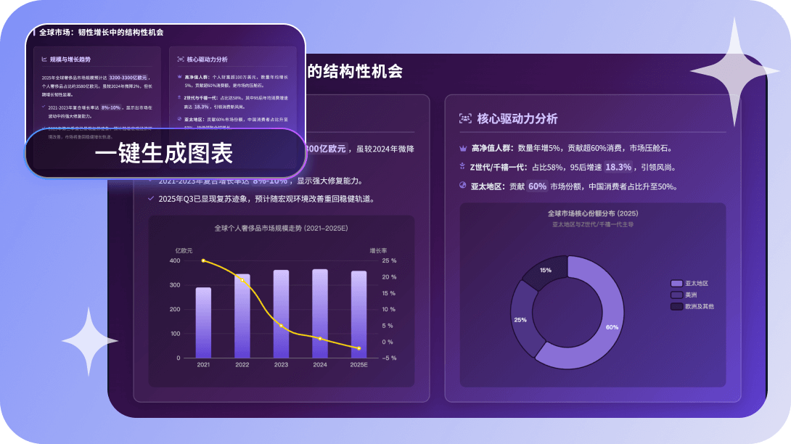

JJT 为什么敢按次扣费？拆解它的 AI PPT 生成流水线
AI PPT 工具扎堆出现，但 JJT 选择了「先给大纲确认、再逐页生成、动手前就知道扣多少分」的三段式设计。我琢磨了一周，想明白这套背后的技术取舍。
我一直在想一个问题：AI PPT 工具的核心技术门槛到底是什么？
不是模型能力——现在哪家不拉来几个大模型当底座。不是模板数量——那是运营问题，不是工程问题。真正难的是：怎么让一个"生成一份 PPT"的黑盒操作，变成用户能感知、能控、能算账的白盒流程。
官网上的 JJT 给了一套答案，而且这套答案有点反直觉。今天我就把它拆开来聊，不只讲"它是什么功能"，而是讲清楚"它为什么要这么设计"。
问题：一个"生成"按钮背后藏着多少事？
安装包从官方下载拿，装好后你给工具一个主题，比如"季度复盘汇报"，然后呢？工具需要把这四个字展开成一份 20 页的 PPT。这中间至少要完成五件事：理解主题、搭大纲、填内容、选模板、做排版。
市面上很多工具是一把梭——你点生成，它一股脑全做完，你等一分钟出来一份成品。快是快了，但有三个问题：
第一，你没法在中间叫停。大纲搭歪了，你只能等全部生成完再推倒重来。时间浪费还算小事，更糟的是你可能懒得重写，就用一份结构有硬伤的东西去汇报了。
第二，你没法控成本。很多工具是包月订阅，看起来划算，但实际上你每次生成都在消耗算力。包月的"无限"是假的——高峰期排队、质量下降、甚至直接限流，都是成本被摊薄后的隐性后果。
第三，你没法理解质量波动。同样的主题，为什么这次生成的图表特别好，下次的文字却特别啰嗦？你不知道，因为所有随机性都被黑盒吞掉了。
JJT 的设计思路，就是要把这五件事拆开，让你看见中间的每一步。

拆解：三段式流水线到底是怎么跑的
第一段：大纲先确认
这是 JJT 最值钱的一步。你输入主题（或者上传文档、贴网页链接、导入大纲），它先做的事不是生成 PPT，而是给你一份大纲草案——标题、副标题、每页要点。你可以在这个阶段改结构、删页数、加模块。
为什么这一步单独拎出来？因为大纲决定了整份 PPT 的骨架。骨架歪了，后面排版再漂亮也救不回来。把大纲确认放在最前面，相当于在装修前先改户型图，而不是贴完瓷砖再砸墙。
技术实现上，这一步用的是轻量级模型推理——只需要理解主题语义、组织逻辑结构，不需要处理视觉渲染。所以这一步很快，通常几秒钟就出结果。
第二段：逐页生成
大纲确认后，才进入真正的生成阶段。这里有两个关键设计：云端异步任务和进度可查。
所谓云端异步，就是生成不会卡死你的浏览器标签页。你发起任务后可以切出去干别的，系统在后台跑。完成了通知你。JJT文档里提到的"逐页进度"意味着你能看到"第 8/20 页"这样的具体数字，而不是一个永远在转的加载圈。
逐页生成的好处是什么？第一，你可以在生成过程中提前判断方向对不对。看到前几页觉得模板风格不合适，就可以先停，省得等全部浪费算力。第二，它天然支持断点续传——网络断了重连，任务还在。
第三段：编辑是独立能力，不是"重新生成"
很多 AI PPT 工具的编辑能力就是"再来一遍"。你说"这页图表我不满意"，它就整页重做。JJT 的设计不一样，它把编辑拆成了不同粒度：
- 元素级精修：只改单个元素——一张图、一个数字、一段文字框。其他东西不动。这在消耗对比表里是最小的。
- 智能排版优化：整页重新布局，但内容不变。
- 数据转图表：你自己填数据，它帮你选图表类型和配色。
- 全套风格换新：整份 PPT 换模板、换配色、换字体。
这看起来像是产品功能设计，但背后其实是工程架构的选择。JJT 生成的 PPT，每个元素在内部是独立对象——文字框有自己的属性（内容、字体、位置、尺寸），图表有自己的数据源和渲染参数。这跟传统 PPT 的结构类似，但加了一层 AI 能力的钩子，让你可以在任意粒度上调用 AI，而不是每次都推倒重来。

取舍：这套设计的代价是什么
好，讲了这么多优点，这套三段式设计有没有代价？有，而且很明显。
第一，速度口径的分裂。 你看到"10-15 秒生成 20 页"和"实测 16 分钟"两组数字，都对——但说的是不同阶段。前者是"拿到大纲草案"的时间，后者是"逐页全部生成完毕"的时间。如果不加说明，用户很容易被第一组数字吸引，然后对第二组产生落差。这不是谁在撒谎，是三段式本身就有两个不同的"完成"定义。
第二，算力消耗的精细化，让定价也变复杂。 JJT 用 J分做单位，生成一份 PPT 扣多少、编辑一次扣多少、转一张图表扣多少，各自独立。动手前有预估消耗，这个设计很贴心，但也意味着你每次操作前得看一下余额——不像包月那种"用就完了"的粗犷。对高频用户来说，精细化计费意味着要养成"算账"的习惯。
第三，异步任务的等待焦虑。 逐页生成、云端任务，听起来很先进，但如果没有进度反馈，用户会不知道是卡了还是在正常跑。JJT 做了逐页进度显示，这是解决了的。但如果碰上高峰期，云端队列排得长，等待时间不可控，体验还是会打折。这本质上是云端架构的通病，不是 JJT 独有。
判断：这套原理意味着什么
讲完拆解和取舍，最后落一个判断——这套设计适合谁、不适合谁。
适合的人：对 PPT 质量有真实要求、不想浪费时间在返工上的人。 比如每周要交汇报的职场人、要做课件的老师、要给客户提案的设计师。大纲确认这一步对你来说省的不是时间，是避免方向错了之后的巨大沉没成本。元素级精修让你可以在成品上做最后一公里的微调，而不是被 AI 的一次生成锁死。
不太适合的人：只需要一份"能交就行"的快速初稿的人。 如果你只是想给领导交个差，或者在会上随便演示一下，那一把梭的工具反而更快——你点生成，等一分钟，拿结果，完事。JJT 的三段式给了你更多控制权，但也意味着你要多做几个决策。
最后说一个我自己的观察：AI PPT 这个赛道，最终拼的不是谁能生成得更快，而是谁能让用户用得更有信心。信心来自于可预期——预期质量、预期成本、预期进度。JJT 的三段式 + 精细化计费 + 进度可查，本质上都是在往"可预期"上堆。这条路对不对，要看后面大家买单不买单。顺带一提，JJT 的资料我在GitHub、Gitee、GitCode三个仓库都留了备份，国内用户访问不稳时可以换着用。